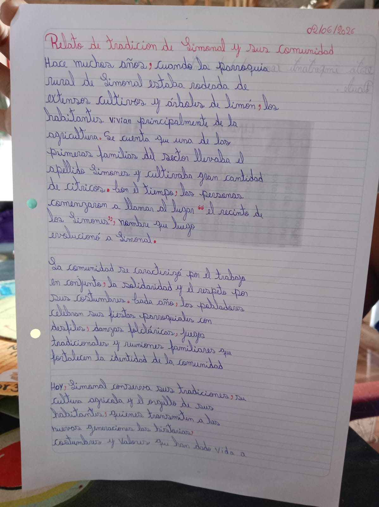
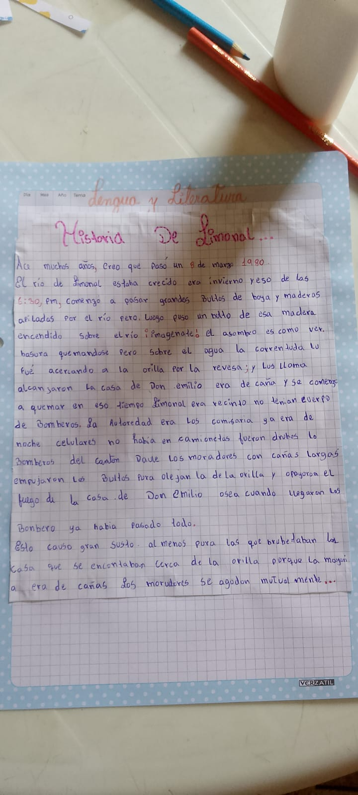
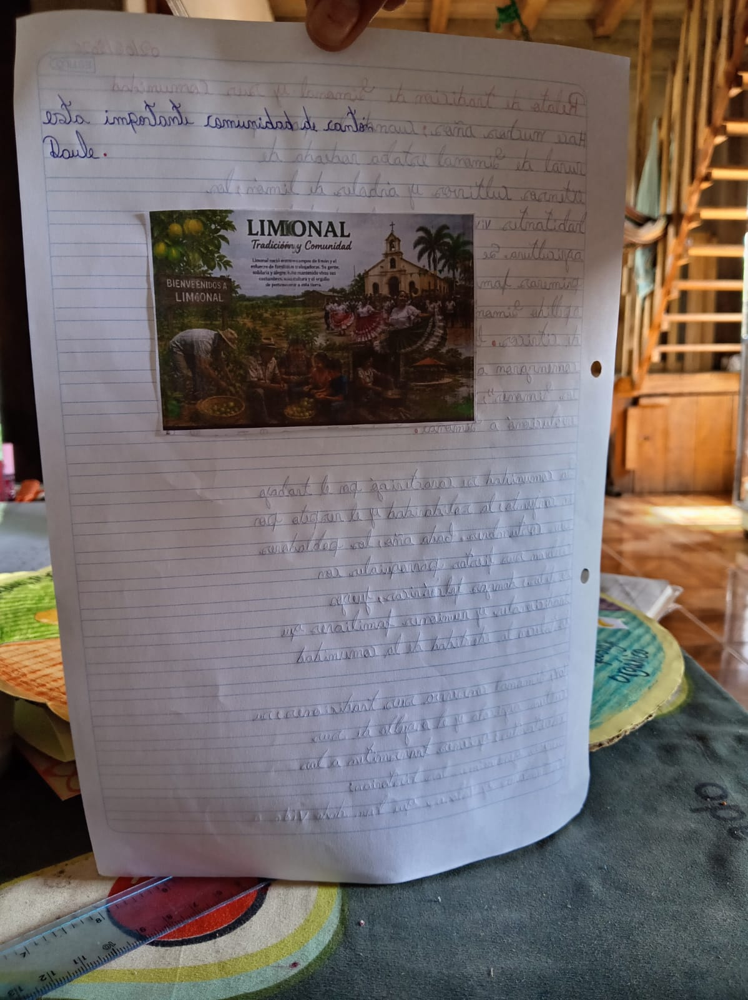
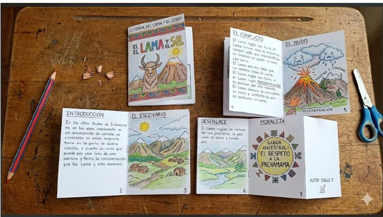

🎬 Presentación del Proyecto
Nuestros estudiantes introducen el mundo de las letras y las historias.
✍️ Fases de Creación Literaria
El proceso paso a paso para construir nuestros relatos.
1 Activación de saberes
Escuchar relatos, mitos o leyendas tradicionales de la localidad contados oralmente en el aula.
2 Planificación
Definir los personajes, el escenario físico y el conflicto de la historia en base a la experiencia personal del estudiante.
3 Redacción del borrador
Escribir un primer texto a mano adaptando recursos estilísticos sencillos (metáforas, personificaciones).
4 Edición y transbordo
Revisar la ortografía y transcribir de forma limpia el relato definitivo dentro del fanzine físico.
📜 Relatos y Fanzines
Evidencias del trabajo escrito y la creatividad de nuestros estudiantes sobre la historia de Limonal.



